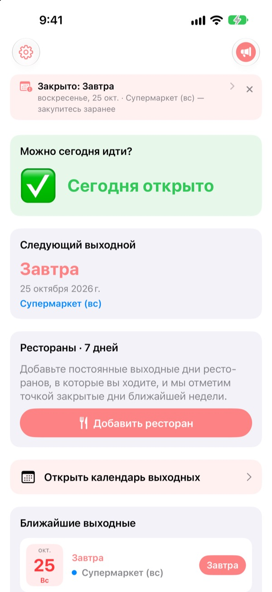
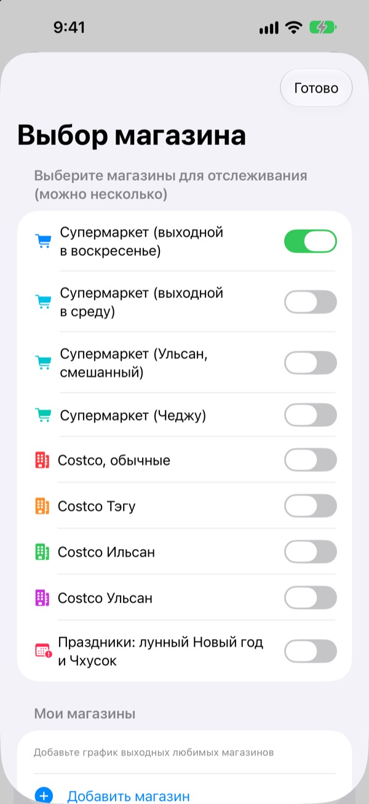
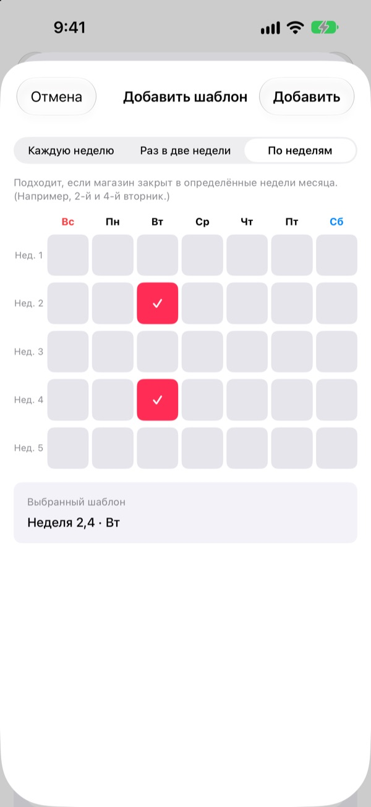
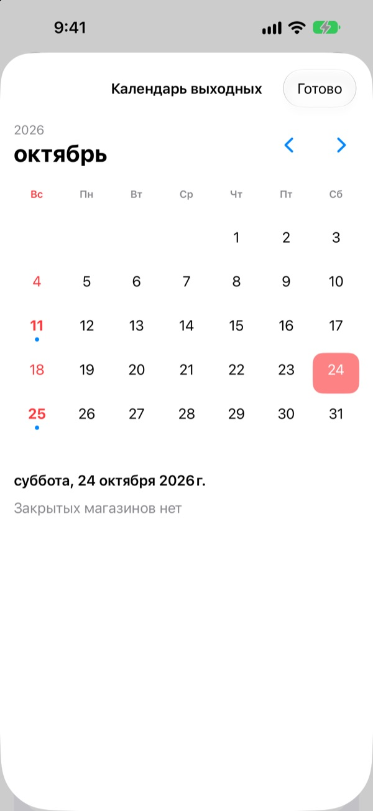
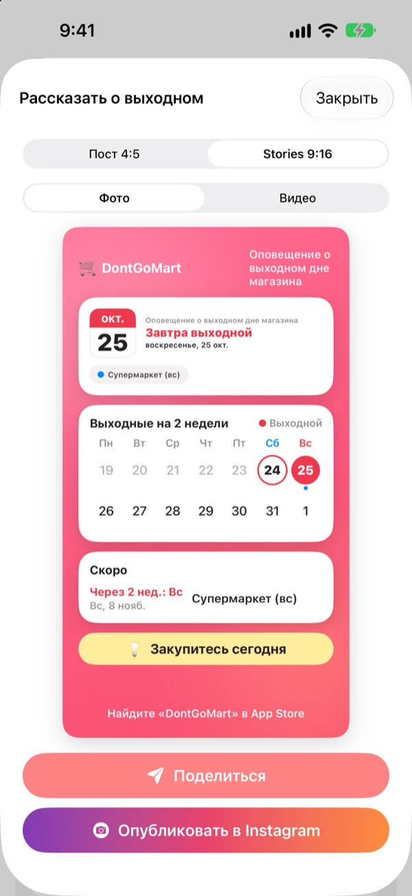

Прежде чем идти за покупками,
узнайте, открыт ли магазин
Открыв приложение, вы сразу видите, работают ли сегодня выбранные магазины. Перед каждым выходным приходит напоминание, так что вы больше не упрётесь в закрытые двери.
Все функции бесплатны. Без аккаунта и рекламы.

Проверьте на своём магазине
Выберите магазин и сразу увидите, открыт ли он сегодня и когда следующий выходной. Расчёт по тем же правилам, что и в приложении.
Приходили со списком покупок к закрытому магазину?
Гипермаркеты в Корее обязаны закрываться два дня в месяц, но какие именно, зависит от места. Чаще всего это второе и четвёртое воскресенье, где-то среда, а в Ульсане и Чеджу свои правила. У Costco всё зависит от филиала. DontGoMart считает выходные по правилам ваших магазинов и первым делом говорит, можно ли идти сегодня.
Верно для любого региона
Выбирайте магазины с выходным в воскресенье или в среду, а также регионы со своим графиком, например Ульсан и Чеджу. Обычные склады Costco и филиалы в Тэгу, Ильсане и Ульсане настраиваются отдельно.
Выходные в сам Соллаль и Чхусок тоже отмечены. Следить можно сразу за несколькими магазинами.

Ваш магазин у дома и любимые рестораны
Если магазина нет в списке, добавьте его сами: каждую неделю, раз в две недели или в какие недели месяца и в какой день он закрыт.
Для ресторана вставьте ссылку из Naver Map или выберите скриншот страницы заведения, и постоянные выходные заполнятся сами. Текст на фото распознаётся только на устройстве.

Уведомления и виджеты, чтобы не забыть
Получайте напоминание за 1, 2, 3 или 7 дней в удобное время, а накануне выходного ещё одно: сегодня хороший день для покупок.
Виджеты на экране «Домой» и экране блокировки показывают ближайший выходной, работает ли магазин в это воскресенье и выходные ресторанов на 7 дней вперёд. В календаре виден целый месяц.

Одна карточка для всей семьи
Превратите новость в карточку с календарём на две недели и советом для покупок и отправьте в семейный чат. Есть размеры для поста и истории в Instagram, а также короткое видео.

Начать можно в три шага
- 1
Выберите магазины
Включите магазины и регионы, где вы покупаете. Сколько угодно.
- 2
Включите напоминания
Выберите, за сколько дней и во сколько.
- 3
Добавьте виджет
Смотрите на экране «Домой» или экране блокировки, не открывая приложение.
Правила выходных по магазинам
- Супермаркет (выходной в воскресенье)
- 2-е и 4-е воскресенье · большинство регионов
- Супермаркет (выходной в среду)
- 2-я и 4-я среда · часть Кёнгидо, Чхонджу
- Супермаркет (Ульсан)
- 2-я среда, 4-е воскресенье
- Супермаркет (Чеджу)
- 2-я пятница, 4-я суббота
- Costco, обычные
- 2-е и 4-е воскресенье
- Costco Тэгу
- 2-й и 4-й понедельник · Тэгу, Тэгу Хёксин
- Costco Ильсан
- 2-я и 4-я среда
- Costco Ульсан
- 2-я среда, 4-е воскресенье
- Соллаль, Чхусок
- выходной в сам праздник
Обязательные выходные устанавливают местные власти, и они могут меняться. Если что-то не совпадает, напишите нам по адресу ниже.
Частые вопросы
Выходные не совпадают с реальностью.
Обязательные выходные устанавливаются местными постановлениями и отличаются по регионам. Проверьте в настройках, что выбран нужный тип магазина (выходной в воскресенье, в среду, Ульсан, Чеджу и т. д.). Если всё равно не совпадает, пришлите нам название магазина и район, мы проверим и исправим.
Моего магазина нет в списке.
Добавьте его как свой магазин. Укажите: каждую неделю, раз в две недели или в какие недели месяца и в какой день он закрыт, например во второе и четвёртое воскресенье.
Выходные ресторана заполнились неправильно.
При импорте по ссылке Naver Map на странице заведения должны быть указаны постоянные выходные. При импорте со скриншота следите, чтобы надпись о выходных была видна на экране. Заполненное можно исправить до сохранения.
Не приходят уведомления.
Проверьте, что уведомления разрешены в Настройки > Уведомления > DontGoMart и что напоминания о выходных включены в самом приложении.
Виджет не обновляется.
Откройте приложение один раз, и виджеты обновятся. Если не помогло, удалите виджет и добавьте снова.
Что такое чаевые?
Все функции DontGoMart бесплатны. Чаевые в виде кофе, торта или обеда помогают поддержать разработчика. После них вы увидите благодарность и значок поддержавшего с числом чаевых.
Куда обращаться по оплате и возвратам?
Встроенные покупки обрабатывает Apple, поэтому возврат запрашивается на reportaproblem.apple.com. По остальным вопросам пишите нам.
Как обрабатываются мои данные?
Нет аккаунтов, рекламы и средств отслеживания, а текст на скриншотах распознаётся только на устройстве. Подробнее в политике конфиденциальности ниже.
Вопросы и идеи присылайте на hyunho.lee.1993@gmail.com. Обычно отвечаем за день-два.